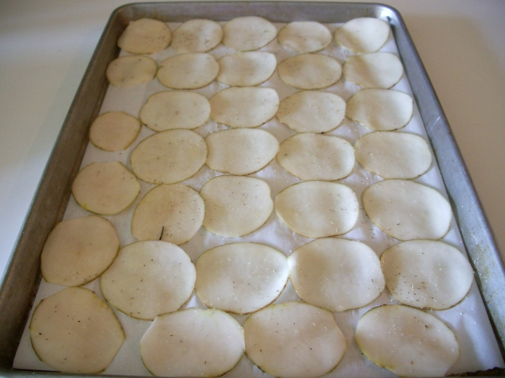
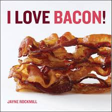
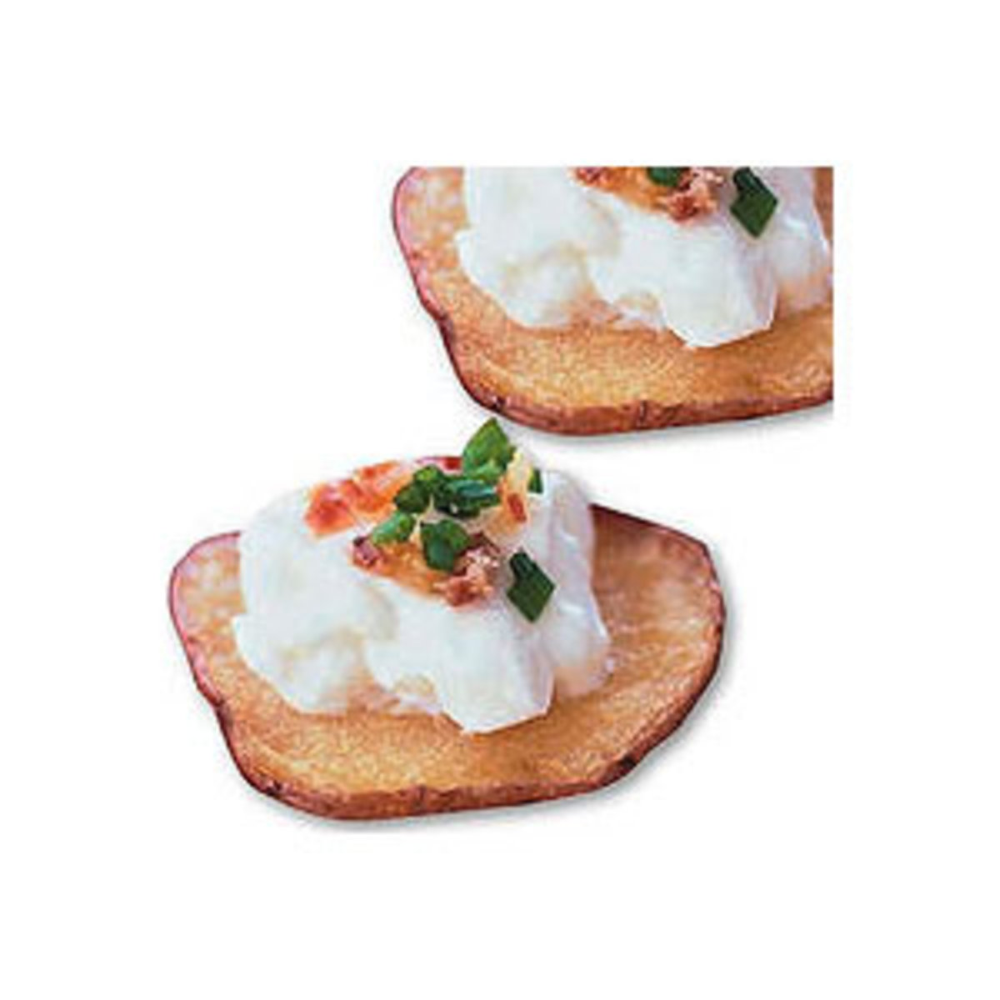

"You don't have to cook fancy or complicated masterpieces - just good food from fresh ingredients" - Julia Child
Instructions |
||
|---|---|---|
| Step 1 | Preheat the oven to 375o . Place the potato rounds on a rimmed baking sheet. Toss with the olive oil, season with salt and arrange in a single layer. Bake for 25 minutes, flip and bake for another 10 minutes. Transfer to a paper-towel-lined plate to drain. |
 |
| Step 2 | Meanwhile, cook the bacon until crisp; crumble and set aside. In a medium bowl, stir together the sour cream and cream cheese until smooth. |
 |
| Step 3 | Arrange the potato slices on a platter in a single layer and top each round with a dollop of the sour cream mixture, some bacon bits and the chives. Serve warm |
 |